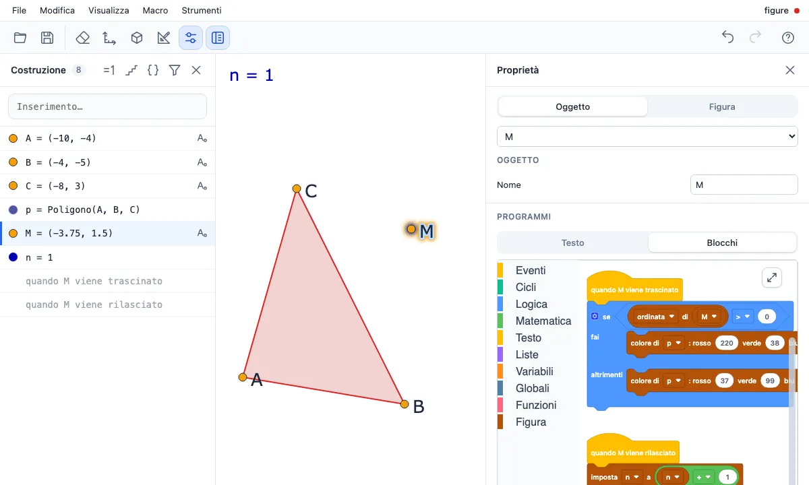
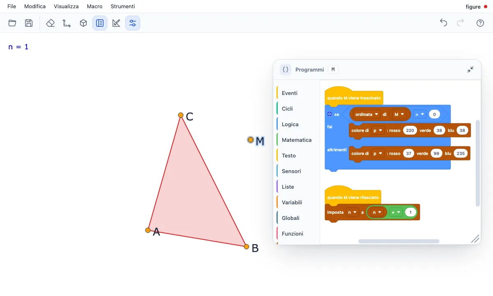

Espressioni e slider
Espressioni
Ogni riga che non è né un punto né un comando crea un’espressione, mostrata in alto a sinistra con due decimali. Il suo tipo si deduce dal testo:
| Riga | Tipo |
|---|---|
a = 3,
lista = [1, 2, 3]
|
costante |
t = "Ciao" |
testo |
f = 0.5x^2 - 4 |
funzione di x (y, z, t); f(2) la
chiama, f'(2) chiama la sua
derivata
|
f(x) = ax^2 + bx + c |
curva della funzione, tracciata:
ax si legge a x, vengono creati gli
slider a, b, c; anche f(2) la
chiama
|
f(x) = x^2, (-1 <= x <= 2)
|
curva tracciata su un intervallo, scritto come
in GeoGebra (≤ o
<=); un estremo può mancare
((x >= 0)), e ogni estremo può
essere una formula ((0 <= x <= a))
|
E = d(A, B) |
misura, ricalcolata quando la figura si muove |
u = "AB = " + round(d(A, B)*100)/100
|
testo calcolato |
In una formula, un punto vale le sue coordinate, un segmento la sua lunghezza, una circonferenza il suo raggio, un poligono la sua area, un angolo la sua misura. Sintassi completa: Formule e programmi.
Un’espressione si sposta trascinandone il testo; agganciata a un punto, lo segue. Toccarla la seleziona, oppure ne scrive il nome durante un inserimento. Si colloca a passi di 10 pixel, il che facilita gli allineamenti.
Slider
r = Cursore(0, 5, 2): da 0 a 5, valore 2. Gli
estremi possono essere espressioni o formule (Cursore(0, d(A, B), 1)). Incremento, lunghezza, orientamento, manopola e animazione
si impostano nelle
proprietà.
r = 5 lo trasforma di nuovo in una costante.
Selezionato, si anima anche
con la molla.
Trascinare l’estremità della sua barra la allunga o la accorcia, a passi di 20 pixel.
Un nome sconosciuto che inizia con una minuscola crea uno slider
da −5 a 5, con incremento 0,1 e valore 1:
A = (a, 4), d = y = m x + p. Una
lettera greca crea un angolo da 0 a 360°, con incremento 1° e
valore 45° (da 0 a 2π in radianti): P = (3; α). Una
riga rifiutata non conserva i suoi slider.
Punti calcolati
-
M = (x(B) + 1, y(A)): coordinate date da formule. -
N = Punto(2*B - A): formula il cui valore è un punto. -
P = (3; 60°): coordinate polari, raggio e angolo.
Quando il valore di una riga nome = formula è un
punto o una lista di punti, dei pulsanti a fine riga propongono
Punto,
Lista di punti,
Lista di segmenti o
Espressione. Invio
sceglie il pulsante evidenziato: punto o lista per un nome
maiuscolo, espressione altrimenti. Da qui
lista = [1, 2, 3] e non L = [1, 2, 3],
che verrebbe letto come un punto dello spazio.
Liste di punti
q = Lista(pts) disegna i punti dell’espressione
pts; un punto non definito interrompe il tracciato.
Un’espressione selezionata il cui valore è una lista di punti
propone anche e
nella zona contestuale (e
per un valore punto): la riga
viene scritta e l’espressione nascosta.
L = {A, (1, 2), Punto(A + [1, 0])}: lista di punti
scritta tra parentesi graffe, ciascuno dato dal suo nome, dalle
sue coordinate o da una formula. Poligono(L) è il
poligono dei suoi punti; Elemento(L, 2), o
L(2) in un argomento, il suo secondo punto:
Retta(L(1), L(2)). Una successione si usa allo
stesso modo:
Poligono(Successione((cos(k*360°/n), sin(k*360°/n)), k, 1,
n))
cambia il numero di vertici con il cursore n.
In una formula, L[0] è il primo punto di L: le
parentesi quadre contano da 0, Elemento da 1.
(L, 1) indica delle coordinate, non un punto di L:
l’editor lo rifiuta.
Una lista può contenere liste:
M = {{(0, 0), (4, 0), (0, 3)}, {A, B, C}}, o
M = {L, K} per due liste L e K. Disegna tutti i
loro punti. Elemento(M, 1) è la sua prima lista:
Poligono(Elemento(M, 1));
Elemento(M, 1, 2) è il secondo punto di quella
lista, M[0][1] in una formula.
Successioni
L = Successione((k, k^2), k, -2, 2) pone i punti
(k, k²) per k da −2 a 2, con passo 1; un quinto argomento dà un
altro passo. L’elemento può essere anche un numero,
Segmento(P, Q), Retta(P, Q),
Circonferenza(O, r) o
Poligono(A, B, C, …), i cui argomenti sono formule
in k: Successione(Circonferenza(A, k), k, 1, 3).
Nello spazio, un terzo argomento dà la direzione u dell’asse
della circonferenza, ortogonale al suo piano:
Circonferenza(O, r, u).
Una successione può contenerne un’altra, i cui estremi leggono
la variabile della prima:
Successione(Successione((i, j), j, 1, i), i, 1, 4).
In una formula, una lista di punti si legge con il suo nome, a
partire da 0: L[0], L[k-1],
L[i][j] per successioni annidate,
L.length per il numero dei suoi elementi. Scrivi
2*i: 2i è un numero complesso.
Programmi
Un’espressione può essere un programma: istruzioni separate da
;, l’ultima delle quali dà il valore; può
formattare altri oggetti (S1.setHidden(1)).
Linguaggio:
Formule e programmi.
- (tavolozza, famiglia «Programmi») apre un programma vuoto; Crea o Ctrl Invio crea l’espressione.
- Per un’espressione esistente, la sezione Definizione delle proprietà modifica il testo su più righe: Invio mantiene il rientro, Tab rientra, } riduce il rientro, Ctrl Invio applica, Esc ripristina, Formatta rientra secondo le parentesi graffe.
- Un errore seleziona la riga errata o il delimitatore non appaiato.
Blocchi e tartaruga
Un programma si scrive anche a blocchi: la sezione Definizione passa da Testo a Blocchi. I blocchi si trascinano dalle categorie (Cicli, Logica, Matematica, Testo, Sensori, Liste, Variabili, Globali, Funzioni, Figura) e si agganciano sotto il blocco programma; un blocco restituisci dà il valore. Ogni modifica si applica subito e si annulla come le altre. Testo e blocchi mostrano lo stesso programma: la scelta resta per i successivi.
Le globali, condivise da tutti i programmi della figura, si creano nella categoria Globali con Crea una globale…; un programma le imposta, le aumenta o le legge. In una cartella di lavoro sono comuni a tutte le pagine: una globale impostata in una pagina ha lo stesso valore nelle altre.
Nella categoria Liste, il blocco L [ i ] legge l’elemento n. i di una lista, il primo essendo il n. 1, e il blocco L [ i ] = v cambia quello di una variabile o di una globale.
Il blocco ultimo elemento di legge l’ultimo elemento di una lista; aggiungi … alla fine di allunga la lista di una variabile e rimuovi il primo elemento di (o l’ultimo) la accorcia. interrompi la lista interrompe la linea tracciata da una lista di punti, come la penna sollevata della tartaruga: i punti aggiunti dopo iniziano una nuova linea.
Nella categoria Cicli, il blocco attendi … ms mette in pausa il programma di un pulsante, mentre la figura viene ridisegnata: quanto basta per animare passo a passo. Toccare di nuovo il pulsante ferma il programma in corso.
Nella categoria Sensori, il blocco
chiedi … e attendi pone una domanda e ferma il
programma fino alla risposta, digitata in un campo e confermata
con OK o Invio; il blocco risposta la legge
poi, come numero se lo è (12,5), altrimenti come
testo. Ogni esecuzione del programma ha la sua risposta.
Nella categoria Funzioni, una funzione può anche dare un valore: il blocco per … ritorna crea un blocco che la chiama e si inserisce come un valore. Le variabili di un programma sono condivise dalle sue funzioni, tranne nelle funzioni delle figure DGPad, che tengono per sé le variabili che definiscono, come in DGPad.
La categoria Figura dà anche l’angolo di tre
punti (angolo 180°, tra 0 e 180°, o
360°, orientato), la
larghezza della finestra, l’unità in pixel
e le altre grandezze della vista;
frecce di … mette frecce alle estremità dei
segmenti di una lista (lunghezza e larghezza in pixel). Il
blocco espressione riceve una formula digitata,
per esempio f(t) per calcolare una funzione della
figura. Nella categoria Testo,
mostra il messaggio visualizza un messaggio.
Tartaruga, nella zona contestuale di un punto, crea la tartaruga che parte da quel punto e la apre a blocchi. Avanza (in pixel o in unità), gira (in gradi), alza o abbassa la penna, cambia colore e spessore, riempie, scrive, si gira verso un punto o ci va. Il suo disegno, una lista, segue il punto e gli oggetti che il programma legge. Finché il suo programma è mostrato, la tartaruga è disegnata dove finisce, rivolta nella sua direzione (una freccia in 3D, verde quando il suo dorso è rivolto verso di sé): ogni blocco aggiunto la mostra avanzare o girare.

Il blocco immagine della categoria Tartaruga
colloca un’immagine centrata nel punto in cui si trova la
tartaruga e rivolta nella sua direzione. Riceve il suo indirizzo
web o un testo data:image/….
larghezza e altezza sono in
pixel (con -1, l’immagine mantiene la sua dimensione),
zoom la ingrandisce o la riduce (1: dimensione
invariata) e opacità va da 0 a 1.
Le tartarughe delle figure DGPad si aprono allo stesso modo: con
il pannello delle proprietà aperto, toccare la loro riga
blk_turtle_exp_… nel pannello «Costruzione». Un
programma con un’istruzione senza blocco resta in testo.
I pulsanti delle figure DGPad (una freccia seguita da un’etichetta) eseguono il loro programma quando li si tocca, anche con il pannello delle proprietà aperto: si prova così il programma mentre lo si modifica. Toccare il loro cerchio a tre punti seleziona il pulsante, trascinarlo lo sposta; Impostazioni, nella zona contestuale, apre il suo programma a blocchi. Il blocco imposta … a della categoria Figura cambia il valore di un’espressione.
Tartarughe e pulsanti si creano anche dalla tavolozza degli
strumenti, famiglia Programmi:
Tartaruga parte dal
punto selezionato (un posto vuoto ne crea uno),
Pulsante si posa nel
posto selezionato; ognuno apre subito il suo programma a
blocchi. Digitato nella riga di inserimento,
Pulsante("Esegui") crea un pulsante al centro della
vista; la sua riga nel pannello «Costruzione» ne cambia
l’etichetta.
Programmi di eventi
Come in Scratch, un programma può rispondere a un evento: un punto trascinabile che viene trascinato, premuto o rilasciato, un testo su cui si fa clic, un’espressione il cui valore cambia. Formatta oggetti e, con il blocco imposta … a, cambia il valore di un’espressione o posiziona un punto libero. Il programma «trascinato» viene eseguito anche mentre il punto è animato.
Nella tavolozza degli strumenti, famiglia Programmi, Quando l’oggetto viene trascinato, Quando l’oggetto viene premuto e Quando l’oggetto viene rilasciato selezionano un punto trascinabile (il secondo anche un testo), Quando il valore cambia un’espressione. Il programma si apre a blocchi sotto il suo blocco iniziale, per esempio quando M viene trascinato; se esiste già, viene mostrato.

Qui, trascinare M colora il triangolo di rosso sopra l’asse delle ascisse, di blu sotto; rilasciarlo aumenta n di 1.
- La sezione Programmi delle proprietà di un punto, di un testo o di un’espressione mostra tutti i suoi programmi, tartaruga compresa, ognuno sotto il suo blocco iniziale e modificabile. Testo mostra l’ultimo su cui si è fatto clic.
- Senza programma, Aggiungi un programma apre la categoria Eventi: trascinare un blocco iniziale nell’area di lavoro crea il programma.
-
Ogni programma ha la sua riga nel pannello «Costruzione»,
per esempio
quando M viene trascinato: toccarla lo apre. - Trascinare una pila sull’elenco delle categorie, o eliminare il suo blocco iniziale, elimina il programma.
- Clic destro su un blocco iniziale: Comprimi la pila lascia solo quel blocco, con un’etichetta che indica il numero dei suoi blocchi; un clic sull’etichetta o Espandi la pila la riapre.
- Clic destro sullo sfondo: Copia tutti i blocchi; su un blocco: Copia i blocchi selezionati copia quel blocco e quelli che lo seguono. Incolla i blocchi li posa nel punto del clic, per lo stesso oggetto, un altro o un’altra figura. Copiati con il loro blocco iniziale, vanno sotto lo stesso blocco iniziale dell’oggetto se è vuoto, e il programma viene creato se serve; altrimenti restano accanto, da collegare.
-
Un blocco selezionato che nomina un oggetto (categoria
Figura), o un blocco in cui ne è inserito
uno, prende il nome dell’oggetto su cui si fa poi clic nella
figura: con il blocco
adiimposta n a aselezionato, un clic sullo slider b dàimposta n a b. Un clic in una zona vuota dell’area di lavoro lascia il blocco: un clic su un oggetto ne mostra allora le proprietà.
Il pulsante in alto a destra dei blocchi li ingrandisce sulla figura, in una finestra trasparente: i pannelli si dissolvono, la figura resta al suo posto. La finestra si sposta con la sua barra del titolo (un doppio clic la rimette al suo posto) e si ridimensiona dal suo angolo; lo stesso pulsante riporta i blocchi nel pannello.

I programmi di eventi delle figure DGPad (trascinare, premere e rilasciare un punto, cambio di un valore) si aprono e si modificano allo stesso modo.
Il programma di apertura di un’espressione o di un pulsante di una figura DGPad viene eseguito una volta, all’apertura della figura; compare sotto il blocco iniziale quando si apre la figura.